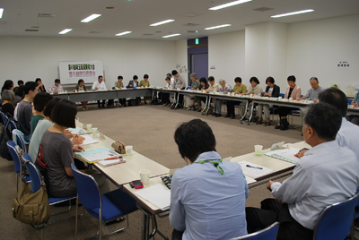

|
|
９月17日（火）午後１時30分より浦和コミュニティセンター第13集会室で開催されました。実行委員会参加26団体から42人が出席し、大会の開催を前に、最終の確認をおこないました。  ■議題 1．自己紹介をし、最後の実行委員会なので全体を確認し、成功につなげていきましょうと、実行委員長からの発言がありました。 2．消費者大会基調報告第３次案、県への要請書（２次案）、大会アピール第２次案が提案され、討議しました。 大会直前までの情勢の変化に応じて、旧騎西高校避難所の支援状況、その他についても数字は随時更新すること、消費者保護に関する法律の中で、消費者運動の成果に値する事がらを加筆することなどを確認しました。また要請書（２次案）の中で、県との懇談会にて回答を求めたい項目について、検討確認しました。 3．市町村における消費生活関連事業調査の進捗が報告されました。 市町村の消費者行政担当との懇談についての呼びかけや、取り組むにあたっての要望について意見聞きしました。調査結果は今後まとめ、大会当日別冊資料として100円で販売することを確認しました。 4．全体会について、時間の流れや舞台進行、オープニング出演者の確認をしました。 5．大会当日の要員と集合時間（各団体受付9：30・実行委員9:45・各団体登壇される方10:20)集合場所の最終確認をしました。 当日の分科会ごとの打合せを、各分科会会場で、助言者と昼食をとり、行うことを確認しました。全体会における各団体の舞台に上がる方･受付担当の方・お弁当の申込みの最終報告は、10/1までにお願いしました。 6．今年の各団体の参加申し込み状況 参加予定数、分科会の参加希望状況は10/1まで事務局へFAXしていただくことをお願いしました。 7．各分科会打ち合わせ 会の進行、レイアウト、運営についての最終確認を行いました。 |